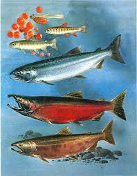

Chinook Salmon, scientifically known as Oncorhynchus tshawytscha, is the largest species of Pacific salmon.
During spawning, their bodies turn various shades of red, purple, or olive green, and males develop a pronounced hooked jaw known as a "kype."
Chinook Salmon are the largest of the Pacific salmon species, with some individuals reaching lengths of up to 4 to 5 feet and weights exceeding 100 pounds. However, most Chinook Salmon caught by anglers are typically between 10 to 50 pounds.
Sockeye Salmon, scientifically known as Oncorhynchus nerka, is one of the five species of Pacific salmon.
During spawning, their bodies turn bright red, and males develop a pronounced hooked jaw.
Sockeye Salmon are medium-sized compared to other Pacific salmon species, typically ranging from 18 to 31 inches in length and weighing between 4 to 15 pounds.
Coho Salmon, also known as Silver Salmon, is scientifically named Oncorhynchus kisutch.
During spawning, their bodies turn darker, and males develop a pronounced hooked jaw.
Coho Salmon are medium-sized compared to other Pacific salmon species, typically ranging from 24 to 30 inches in length and weighing between 6 to 12 pounds.
Pink Salmon, scientifically known as Oncorhynchus gorbuscha, is the smallest and most abundant of the Pacific salmon species.
They have a distinctive appearance with a light blue-green back and silver sides. During spawning, their bodies turn a pale pink color, hence their name.
Pink Salmon are relatively small compared to other salmon species, typically ranging from 20 to 25 inches in length and weighing between 3 to 5 pounds.
They are known for their high abundance, with some populations exhibiting cyclical patterns of abundance known as "odd-year" and "even-year" runs. During peak years, Pink Salmon can dominate spawning grounds in rivers and streams.
Chum Salmon, scientifically known as Oncorhynchus keta, is also commonly referred to as Dog Salmon due to its dog-like teeth and snout shape during spawning.
Chum Salmon are the second largest species of Pacific salmon, typically ranging from 24 to 33 inches in length and weighing between 8 to 15 pounds.
This species usually spawns in the late summer or fall, with males arriving at spawning grounds first to establish dominance and dig spawning nests called redds. Females then enter the spawning grounds to deposit their eggs, which are fertilized by the males.
These salmon are native to the Pacific Northwest, including Alaska, where they undertake remarkable migrations from the ocean to freshwater rivers and streams to spawn. Chum Salmon are known for their strong swimming abilities and remarkable resilience as they navigate upstream to reach their spawning grounds.
Every salmon species plays a vital role in the ecosystem, serving as an important food source for other wildlife and contributing to the nutrient cycle of the region. They are also economically important, supporting commercial and recreational fishing industries.
They all typically spawn in the late summer or fall, with males arriving first to establish territories and females following shortly after. They spawn in gravel nests called redds, where females deposit their eggs and males fertilize them.
Alaska salmon are born in freshwater streams, migrate to the ocean to mature, and then return to the same freshwater streams to spawn. This migration cycle is a key characteristic of salmon and is essential for their reproduction and survival.
However, salmon populations face threats from habitat degradation, overfishing, and climate change. Conservation efforts focus on protecting and restoring salmon spawning habitats and implementing sustainable fishing practices to ensure the long-term survival of these iconic species.